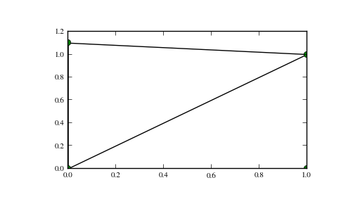

scipy.spatial.Delaunay¶
- class scipy.spatial.Delaunay(points, furthest_site=False, incremental=False, qhull_options=None)¶
Delaunay tesselation in N dimensions.
New in version 0.9.
Parameters : points : ndarray of floats, shape (npoints, ndim)
Coordinates of points to triangulate
furthest_site : bool, optional
Whether to compute a furthest-site Delaunay triangulation. Default: False
New in version 0.12.0.
incremental : bool, optional
Allow adding new points incrementally. This takes up some additional resources.
qhull_options : str, optional
Additional options to pass to Qhull. See Qhull manual for details. Option “Qt” is always enabled. Default:”Qbb Qc Qz Qx” for ndim > 4 and “Qbb Qc Qz” otherwise. Incremental mode omits “Qz”.
New in version 0.12.0.
Raises : QhullError :
Raised when Qhull encounters an error condition, such as geometrical degeneracy when options to resolve are not enabled.
Notes
The tesselation is computed using the Qhull library [Qhull].
Note
Unless you pass in the Qhull option “QJ”, Qhull does not guarantee that each input point appears as a vertex in the Delaunay triangulation. Omitted points are listed in the coplanar attribute.
References
[Qhull] (1, 2, 3, 4) http://www.qhull.org/ Examples
Triangulation of a set of points:
>>> points = np.array([[0, 0], [0, 1.1], [1, 0], [1, 1]]) >>> from scipy.spatial import Delaunay >>> tri = Delaunay(points)
We can plot it:
>>> import matplotlib.pyplot as plt >>> plt.triplot(points[:,0], points[:,1], tri.simplices.copy()) >>> plt.plot(points[:,0], points[:,1], 'o') >>> plt.show()
Point indices and coordinates for the two triangles forming the triangulation:
>>> tri.simplices array([[3, 2, 0], [3, 1, 0]], dtype=int32) >>> points[tri.simplices] array([[[ 1. , 1. ], [ 1. , 0. ], [ 0. , 0. ]], [[ 1. , 1. ], [ 0. , 1.1], [ 0. , 0. ]]])
Triangle 0 is the only neighbor of triangle 1, and it’s opposite to vertex 1 of triangle 1:
>>> tri.neighbors[1] array([-1, 0, -1], dtype=int32) >>> points[tri.simplices[1,1]] array([ 0. , 1.1])
We can find out which triangle points are in:
>>> p = np.array([(0.1, 0.2), (1.5, 0.5)]) >>> tri.find_simplex(p) array([ 1, -1], dtype=int32)
We can also compute barycentric coordinates in triangle 1 for these points:
>>> b = tri.transform[1,:2].dot(p - tri.transform[1,2]) >>> np.c_[b, 1 - b.sum(axis=1)] array([[ 0.1 , 0.2 , 0.7 ], [ 1.27272727, 0.27272727, -0.54545455]])
The coordinates for the first point are all positive, meaning it is indeed inside the triangle.
Attributes
transform Affine transform from x to the barycentric coordinates c. vertex_to_simplex Lookup array, from a vertex, to some simplex which it is a part of. convex_hull Vertices of facets forming the convex hull of the point set. points (ndarray of double, shape (npoints, ndim)) Points in the triangulation. simplices (ndarray of ints, shape (nsimplex, ndim+1)) Indices of the points forming the simplices in the triangulation. neighbors (ndarray of ints, shape (nsimplex, ndim+1)) Indices of neighbor simplices for each simplex. The kth neighbor is opposite to the kth vertex. For simplices at the boundary, -1 denotes no neighbor. equations (ndarray of double, shape (nsimplex, ndim+2)) [normal, offset] forming the hyperplane equation of the facet on the paraboloid (see [Qhull] documentation for more). paraboloid_scale, paraboloid_shift (float) Scale and shift for the extra paraboloid dimension (see [Qhull] documentation for more). coplanar (ndarray of int, shape (ncoplanar, 3)) Indices of coplanar points and the corresponding indices of the nearest facet and the nearest vertex. Coplanar points are input points which were not included in the triangulation due to numerical precision issues. If option “Qc” is not specified, this list is not computed. .. versionadded:: 0.12.0 vertices Same as simplices, but deprecated. Methods
add_points(points[, restart]) Process a set of additional new points. close() Finish incremental processing. find_simplex(self, xi[, bruteforce, tol]) Find the simplices containing the given points. lift_points(self, x) Lift points to the Qhull paraboloid. plane_distance(self, xi) Compute hyperplane distances to the point xi from all simplices.